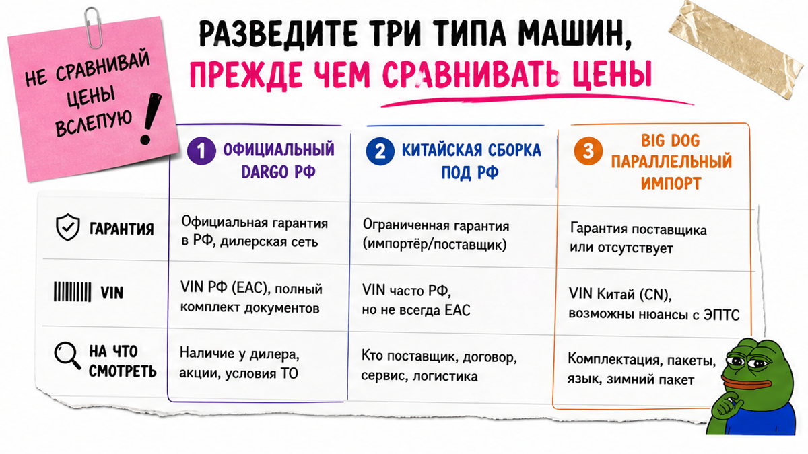
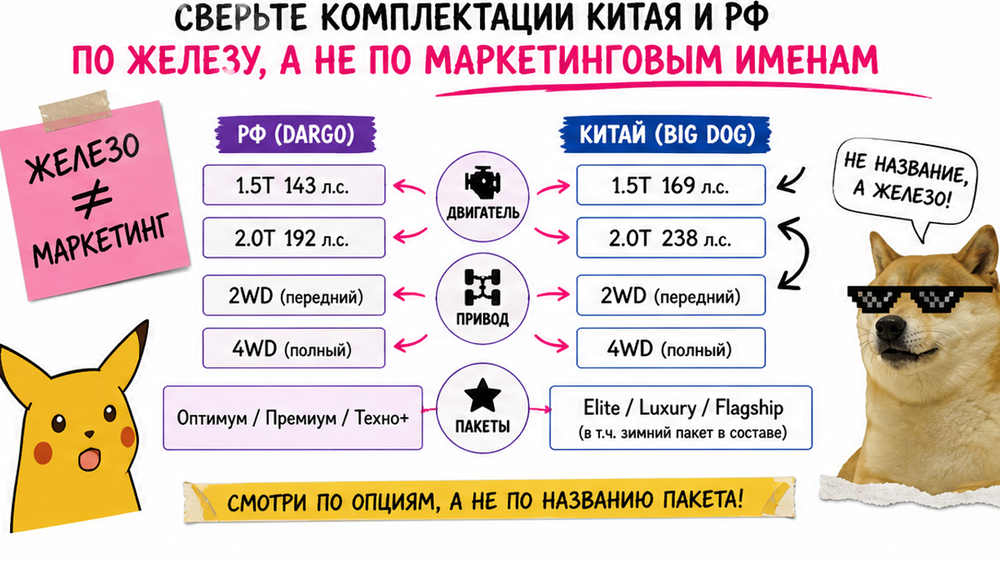
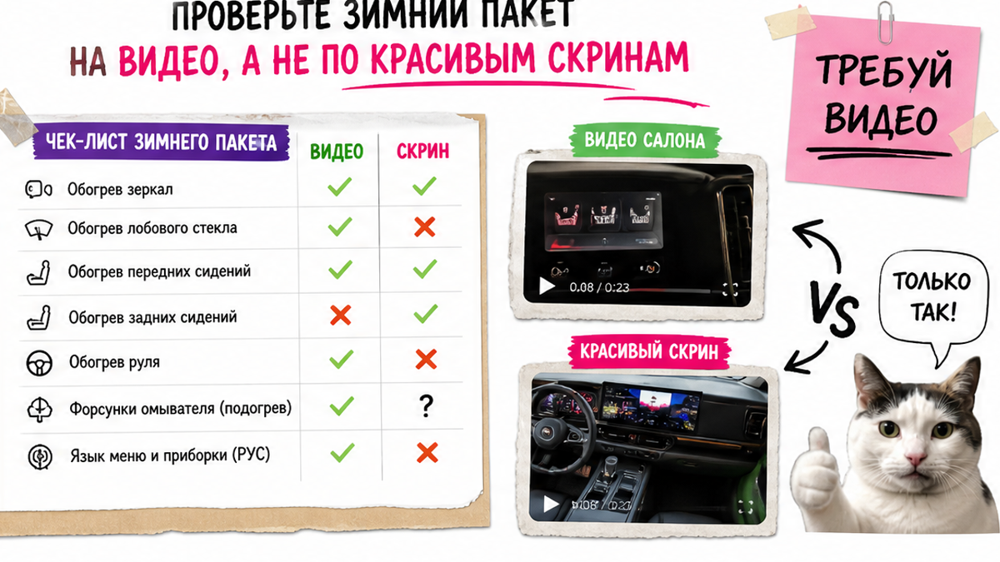

Антон из Новосибирска нашёл объявление "Dargo 2.0 4WD из Китая, почти как Техно+" и внёс депозит по скринам салона. Через месяц выяснилось: это китайский Big Dog без обогрева зеркал и лобового, меню на китайском, а "полная комплектация" в российском смысле не совпала. Депозит вернуть не удалось. Главная проблема новичка – перепутать китайский Big Dog с российским Dargo до оплаты. Чтобы не повторить эту ошибку, сначала сверьте мотор, привод и зимний пакет с документами, и только потом платите.
Инсайт до депозита: Китайский Haval Big Dog и официальный Dargo в РФ – разные машины по мотору, приводу и опциям. Названия "Оптимум / Премиум / Техно+" на лот из Китая не переносятся. До депозита нужны VIN, сверка 1.5T/2.0T и 2WD/4WD, видео зимнего пакета и договор на вас как физлицо. Статьи растаможки и утильсбора считайте через Владивосток – без готовых сумм в тексте.
В 2026 году в объявлениях часто пишут "Хавал Дарго из Китая дешевле". На практике это может быть параллельный импорт Big Dog, а не тульская машина с дилерской гарантией. Мы в Авто-Сейлс во Владивостоке сначала разбираем комплектацию, а уже потом – логистику.

Типичная ошибка новичка – считать, что все "китайские Dargo" одинаковые. На практике встречаются три разные истории.
| Тип машины | Что это | Гарантия в РФ | На что смотреть |
|---|---|---|---|
| Официальный Dargo РФ | Тульская спецификация под рынок РФ | Да, через дилера | Оптимум / Премиум / Техно+, только 4WD |
| Китайская сборка под РФ | Машина под РФ-спеку, VIN часто LGW | Обычно да (по правилам поставщика) | Не путать с "просто из Китая" |
| Big Dog параллельный импорт | Китайская спецификация под заказ | Заводской гарантии РФ нет | Мотор, привод, зимний пакет, язык меню |
Делать: требуйте в объявлении ясность – Big Dog / параллельный импорт или официальная РФ-спека. Не делать: сравнивать цену CN-лота с дилерским прайсом Техно+, пока не ясно, какой из трёх типов перед вами.

Удивительный факт: в Китае у Big Dog 2026 есть 1.5T передний привод и 2.0T около 238 л.с. с 9DCT и блокировкой заднего дифференциала. Официальный Dargo 2026 в РФ – только 2.0T около 200 л.с., только полный привод и три пакета Оптимум / Премиум / Техно+. Китайскую машину при этом часто продают как "максималку", хотя по зимним опциям она беднее.
| Параметр | Китай Big Dog (бензин) | Официальный Dargo РФ 2026 |
|---|---|---|
| Мотор | 1.5T (~184 л.с.) или 2.0T (~238 л.с.) | Только 2.0T (~200 л.с.) |
| Привод | 2WD или 4WD | Только 4WD |
| Коробка | 7DCT у 1.5; 9DCT у 2.0 4WD | 7DCT |
| Имена пакетов | Labrador / Border Collie / Pastoral Dog и др. | Оптимум / Премиум / Техно+ |
| Зимний пакет | Часто без обогрева зеркал/лобового | Ориентир РФ-рынка, проверять по листу |
| Гарантия завода в РФ | Нет на параллельный импорт | Да у официального канала |
На практике 1.5T 2WD – не "почти Оптимум". А 2.0T 9DCT 238 л.с. – не "тот же Техно+", а другая настройка и другая коробка. Гибриды Hi4 / Hi2 – отдельная ветка: не смешивайте их с бензином без явной сверки.
Делать: по лоту выпишите год, мотор (1.5 или 2.0), КПП, привод и наличие задней блокировки. Не делать: верить слогану "как Техно+", если в спеке 1.5 и передний привод.

Например, в сибирскую зиму отсутствие обогрева зеркал и лобового ощущается сразу. У привезённых Big Dog эти опции часто отсутствуют, хотя в объявлении машина выглядит "топовой". Русский язык на китайской мультимедиа сам не появляется: нужна смена региона, а сервисные кампании РФ на параллельный импорт не распространяются.
Запросите короткое видео: обогрев зеркал и лобового, подогрев руля (если обещают), складывание зеркал и язык меню.
Делать: отказывайтесь от лота, если вместо видео дают только скрины салона. Не делать: рассчитывать, что "прошивка всё починит" после прихода во Владивосток.
Документы – не "потом разберёмся". До оплаты зафиксируйте, что инвойс и договор оформляются на вас как физлицо. Обычно нужны инвойс, ДКП, паспорт, СБКТС, ЭРА-ГЛОНАСС, ЭПТС и квитанция утильсбора. Хаб Авто-Сейлс – Владивосток: порт, СВХ, оформление и выдача по России.
Схема до депозита:
Задача и бюджет → Сверка CN vs РФ → VIN и история → Видео зимнего пакета → Документы на физлицо → Статьи платежей через Владивосток → Чек-лист красных флагов → Депозит по договору
С 01.12.2025 льготный утиль для физлиц действует только до 160 л.с. Типичные Dargo / Big Dog выше порога, поэтому ставка коммерческая. Готовые суммы в текст не ставим: курс и условия ввоза меняются. Расчёт по VIN получите у команды Авто-Сейлс.
Делать: уточните, кто платит утиль и на чьё имя идёт ввоз. Не делать: переводить депозит на карту физлица без договора и сроков поставки.
Вот рабочий порядок, который новичок может выполнить сам за один вечер.
Делать: сохраняйте скрины VIN, одометра и переписки до оплаты. Не делать: платить "чтобы не упустили", пока хоть один пункт красный.
Критерий успеха: заполнен чек-лист "до депозита". VIN совпал, комплектация сверена, зимний пакет на видео, документы на физлицо, путь через Владивосток понятен. Если хоть один пункт красный – депозит не платите.
Что сделать сегодня без поездки в Китай:
Нужен разбор конкретного лота – напишите в Telegram avtosales125. Форм на странице нет: подбор и актуальные цифры живут в каталоге и переписке.
Материал проверен: редакция Авто-Сейлс (эксперты по авто под заказ из Японии, Кореи и Китая).
Достоверность: факты сверены с материалами HAVAL RU по Dargo 2026, китайскими каталогами Big Dog, обзорами Autonews и "За рулём" по параллельному импорту и практикой заказов через Владивосток; актуальные расчёты – в каталоге.
Это разные спецификации: в Китае бывают 1.5T 2WD и 2.0T 4WD с другой мощностью и коробкой, в РФ с 2026 – только 2.0 4WD и пакеты Оптимум / Премиум / Техно+. На параллельный импорт заводская гарантия РФ обычно не действует. Сначала определите тип машины, потом сравнивайте цену.
Нельзя. Эти имена – маркетинг официального РФ-листа. По лоту из Китая сверяйте мотор, КПП, привод и список опций по китайской таблице. Если продавец настаивает на "как Техно+", попросите письменную спеку, а не скрин салона.
Полный VIN в трёх местах, историю в китайских сервисах, видео зимнего пакета, язык меню, договор на вас как физлицо и понятный маршрут через Владивосток. Нет пакета – нет перевода. Любой красный флаг из чек-листа выше = отказ.
Если нужен полный привод и запас по тяге – смотрите 2.0 4WD и наличие задней блокировки. 1.5 2WD дешевле в объявлении, но это не аналог официального РФ Dargo. Решение фиксируйте по своим задачам города и зимы, а не по слогану "максималка".
Статьи платежей зависят от мощности, курса и условий ввоза, поэтому готовые суммы в тексте быстро устаревают. Передайте VIN и комплектацию в каталог Авто-Сейлс или в Telegram avtosales125 и получите расчёт под ваш лот через Владивосток.
Только после зелёного чек-листа: VIN совпал, комплектация сверена, зимний пакет на видео, документы на физлицо, статьи платежей понятны, договор с сроками есть. Давление "сегодня последнее место" – сигнал остановиться, а не ускориться.